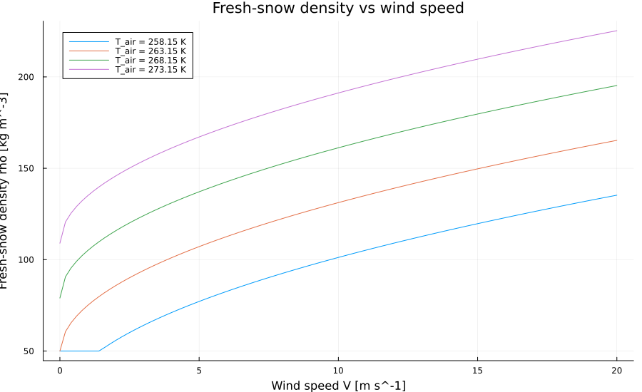

Accumulation And Melt
Accumulation and melt are handled by the internal helpers _apply_accumulation! and _apply_melt!, which are called from step!. They are documented here because they define the model behavior, but the intended public entry point is step!.
Accumulation
With snowfall rate $P_{\mathrm{snow}}$ and rainfall rate $P_{\mathrm{rain}}$ in $\mathrm{kg\,m^{-2}\,s^{-1}}$ and timestep $\Delta t$ in seconds, the added masses are
\[\Delta m_{\mathrm{snow}} = P_{\mathrm{snow}}\Delta t, \qquad \Delta m_{\mathrm{rain}} = P_{\mathrm{rain}}\Delta t.\]
If the column is empty, a new surface layer is created only when snowfall is positive. Rain alone does not create a snow layer.
Fresh-Snow Density
When fresh_snow_density_scheme = :constant, the code uses rho_s clamped to [50, rho_i].
When fresh_snow_density_scheme = :parameterized, the code uses
\[\rho_\mathrm{fresh} = a + b\,(T_\mathrm{air} - T_0) + c\,\sqrt{V},\]
with default coefficients a = 109, b = 6, and c = 26, optional wind speed V, and final clamp to $[50, \rho_i]$.

If snowfall is added to an existing surface layer, the new bulk density is mixed by conserving layer volume:
\[\rho_1^{new} = \frac{m_1^{old} + \Delta m_{\mathrm{snow}}} {m_1^{old}/\rho_1^{old} + \Delta m_{\mathrm{snow}}/\rho_\mathrm{fresh}}.\]
Rainfall is added directly to the surface liquid-water store mass_w[1] when a snow layer exists.
Layer-Structure Enforcement
After mass addition, the code:
- splits the surface layer when
mass[1] > mass_max - frees space at the bottom when all
Ntotlayers are already active - merges or rebalances the surface when
mass[1] < mass_min - applies the snow-depth cap described on the Layer Structure And Basal Transfer page
Melt
_apply_melt! removes requested melt mass from the top downward, converts that mass into liquid water in the current layer, and leaves the later retention and refreezing decisions to go_percolation! and go_refreezing!.
Given a requested melt amount $m_{\mathrm{melt}}$:
- clamp the request to nonnegative values
- remove up to the available solid mass from the surface layer
- add the removed mass to the surface liquid-water store
- if the surface layer is depleted, route its remaining liquid water into the next layer or to runoff and remove the empty layer
- if the surface layer remains but falls below
mass_min, merge or rebalance it with the next layer
Interaction In step!
The accumulation-and-melt-related ordering in one call to step! is:
_apply_accumulation!- densification
go_energy_flux!_apply_melt!when melt energy is availablego_percolation!- HTESSEL liquid-water compaction when enabled
go_refreezing!
Internal Reference
Chion._fresh_snow_density — Function
_fresh_snow_density(c, air_temperature, wind_speed)Diagnose the density of newly fallen snow from the configured scheme in c. The result is clamped to a physically plausible range between fresh snow and ice density.
Missing docstring for _apply_accumulation!. Check Documenter's build log for details.
Chion._apply_melt! — Function
_apply_melt!(..., idx, mass_split, mass_min, melt_mass, c)Convert up to melt_mass of surface snow into liquid water in column idx. This mutates snow mass, liquid water, runoff routing, surface temperature, and surface albedo as depleted layers are removed or merged.